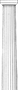

Making a Statocles Plugin

The other day I decided that I didn't like the ugly a href links to my audio clips. The HTML5 audio element is far superior!
I build this online journal with the excellent perl module, Statocles, so I wanted something built-in to do the job.
To see this in action, check out any post on this site tagged with "music."
But at first, I did write a little script that inspected every *.html file on my site. This translated any anchor (a) link with an audio file href, like an MP3 or OGG, to an audio element with the audio file as the src. But like I say, I wanted something that was part of Statocles to do this for me instead of a separate program.
So I read a bit and asked on the #statocles IRC channel (on irc.perl.org) and came up with a rudimentary solution, based on a code snip from preaction.
First up, give the plugin a proper name:
package Statocles::Plugin::AudioTag;
Next, provide an "ABSTRACT" comment that briefly describes the purpose of the plugin:
# ABSTRACT: Change audio file anchors to audio elements
Give the plugin a version:
our $VERSION = '0.0200';
Specify the minimum perl we can run this with, based on modern syntax:
use v5.20.0;
Now import the Statocles functionality:
use Statocles::Base 'Class';
with 'Statocles::Plugin';
Give your plugin plenty of documentation. Code without any docs is basically impossible to know how to use without diving into the source, itself.
The module has a single attribute, the file_type which tells the module what kind of links to look for and replace.
Now onto the meat of the plugin in which the audio bits of a Statocles::Page are processed.
sub audio_tag {
my ($self, $page) = @_;
if ($page->has_dom) {
$page->dom->find('a[href$=.'. $self->file_type .']' )->each(sub {
my ($el) = @_;
$el->replace(sprintf '<audio controls><source type="audio/%s" src="%s"></audio>', $self->file_type, $el->attr('href'));
});
}
return $page;
}
This method takes a page and looks through its contents ("down the DOM") for any a audio link elements. If it finds any, they are each converted to an audio element. Finally the page is returned to the caller.
In this case, the caller is the register method that is the essential method of Statocles::Plugin. This registers the plugin with Statocles. And if it is listed in the site.yml configuration file (as in the plugin SYNOPSIS), it will be executed when the site is built or deployed.
sub register {
my ($self, $site) = @_;
$site->on(build => sub {
my ($event) = @_;
for my $page ($event->pages->@*) {
$page = $self->audio_tag($page);
}
});
}
(So I actually had the meat of the code in the register method. But I discovered that this did not let me test that the thing was working! So I broke-out the audio_tag method and added it to the test. Yay!)
And that's it! Now instead of an ugly <a href="...">...</a> link to an audio clip, now I have this:
Statocles::Plugin::AudioTag - Excellent!